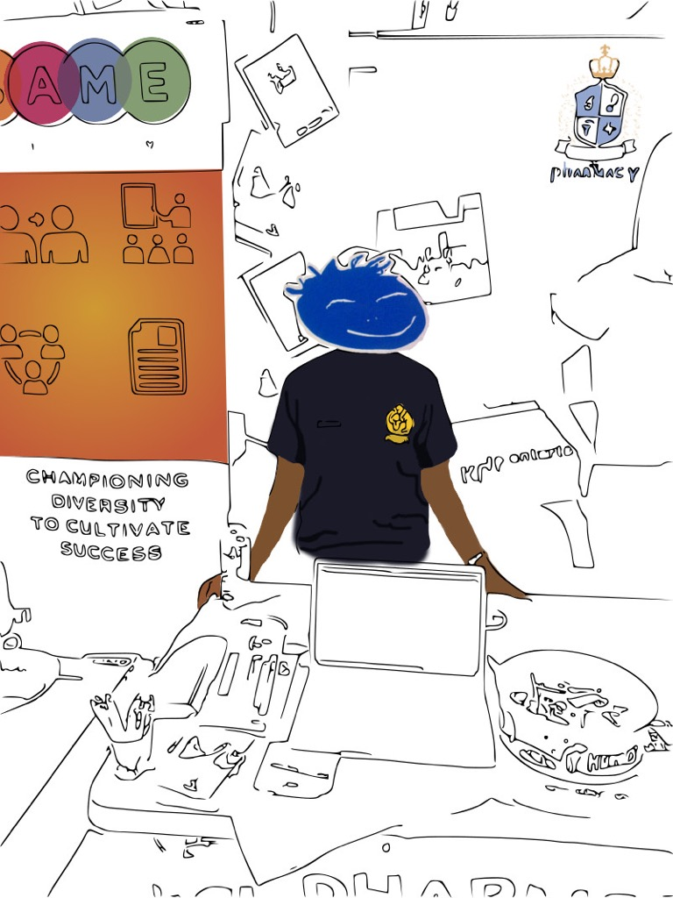
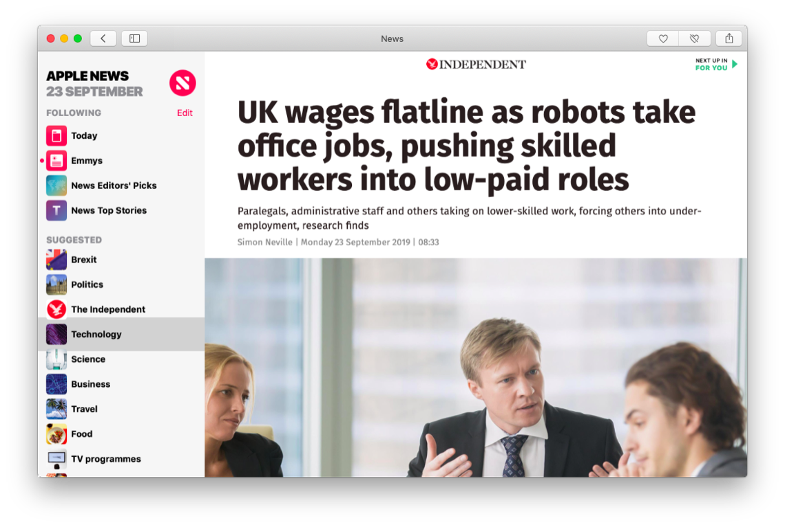

The adulthood is certainly more difficult than most of us imagined as we discover the world built by corrupt self-righteous adults is properly unfair. In other words: life will kick you in the balls. Especially so when you think outside the box and have an independent world view which used to be completely normal when humans still had conscience, but now became a unique characteristic. The society that promises its members security, well paid jobs and fast cars, in exchange for them burning out lives for corporate interests, will betray anyone who decides to discover alternative paths, testing his/her vision and how much they really want to go their own way. One's goal is to persevere despite the challenge and develop a reality tunnel in which the problems that are faced are only to the advantage, to forge a personality that is capable of true success and not some cheap pastiche of a human achievement. I used to think that higher education, dedication to profession, and businessmanship were conservative qualities. Read my dare to struggle dare to win story to find out how perverted the neo-liberal Conservative party in the UK really is and how it has 0 British values left.
I'm now 26 years old, almost 27 and I had spent 10 years in England prior to August 2018, when with a help of the UK's corrupt pseudo-endorsing body in the technology sector I had to pack up my shit and leave, because Tech Nation, that provides Tier 1 Exceptional Talent visas for talented young individuals who can benefit the sector, in reality has hijacked the visa to exploit it as a loophole for venture-backed businesses invested in by its directors. A lot of people assume that the UK is a fair democracy and a developed country, and don't realise that it's being transformed into a close technocracy run by the elite — a bunch of amoral capitalists with links in the government who try to run a country like it's a start-up. Eventually they will end up like wework, and ruin the whole country, making people say wemisswork. To start real political education, everyone must
pick up this book from their local library to learn the basis of how technological societies function. Tech Nation is a mere propaganda tool the government uses to make their activity seem legit and justified, and here's why.
The 2011 website states: The Tech City Investment Organisation (TCIO) is dedicated to driving investment to the area. They are on hand to share with you their know-how, giving practical support and networking advice to help your company succeed.
Surely, an investment organisation is not really fit to decide who has natural abilities for programming and Software Engineering? Yet Tech Nation apparently IS an endorsing body, and although they've stepped up from simple "networking" advice to proper knee-deep, "government contacts" corruption scheme (see below), they still hire 0 professionals in computing who would be able to properly assess applications.
The Exceptionally Talented Visa route in the UK is the best one in the world, as it does not require you to have any capital when entering GB, and you can settle in the country in 3-5 years. However, when there are real endorsing bodies, such as The Royal Academy of Engineering, Arts Council England, Royal Society and British Society that were granted their Royal Charters and employ respectable fellows to process applications, Tech Nation used to be a little Shoreditch-based start-up that initially was helping the "silicon valley" of London, the Silicon Roundabout, with operations. In 2012, it was granted the "endorsing" body status by David Cameron, in the beginning of the government's bid to develop "tech" economy that benefits the establishment at the expense of tax payers and call it by the nice name "Industrial Strategy", using the myth of technological progress as a pretence to hide the real activity of industrialised corruption behind people's gullibility triggered by the idea that progress = better.
By the way, there's already an organisation called British Computer Society which has the ability to provide IT professionals with a charter (in Engineering, chartering is normal but not when you're a Software Engineer for some reason), but it's not nearly as good as Tech Nation to do the job: BCS actually has Computer Scientists (who number 0 at Tech Nation) and the Royal Charter (that numbers -1 at Tech Nation), but only when you have 0 honour, you can do the job that Tech Nation is doing.
Don't believe me? Here's a sneak peek into their scheme and how Tech Nation is playing its dirty role in it. I single out each player in this unfolding techno-capitalist drama and briefly critique them to draw a bigger picture. Let's just start by looking at the key figure from the list of directors of Tech Nation, and set off from there.
Eileen BURBIDGE —
"American venture capitalist, founding partner at Passion Capital." (Forbes), and a chair at Tech Nation. The key is venture capitalist, because the whole of Tech Nation's purpose is to serve venture capitalists like Ms Burbidge and her friends. Her Passion Capital company is located at White Bear Yard, Shoreditch and is a co-working space for trendy entrepreneurs, building "startups". In the Wired Documentary (1:20), Ms Burbidge talks about how "more than a half, if not two-thirds, of the businesses are from foreign-born entrepreneurs". She says how fantastic it is, but she's a typical capitalist liar, who will say anything that presents reality in the light that supports their mode of power regardless of facts. If she is not a liar, why her company Tech Nation which I paid £456 for processing of my application, is treating me like shit and robbing me of an opportunity to be a foreign-born entrepreneur in London, which is what makes London so fantastic according to her?
Figure 2: Capitalist Liar Eileen Burbidge in Wired's 15min film praising London's tech culture.
Maybe I'm too harsh, she's just a director, she's not really aware of the unfair unethical practices at her company, or does she? The answer is yes she does, because after Tech Nation's Senior Manager lied about my application, I made a website, and sent it to each member of their useless team, consisting of 0 software engineers and who would have no idea who's actually telling the truth. I had a premium membership at the time and accumulated 45 credits, so right before Christmas Tech Nation's staff got a little message from me.
Needless to say, none of the cowards dared to answer anything, because they are despicable traitors of the country who think they can give visas in technology without even knowing basics of computer programming and have no courage to really look into the issue, preferring to ignore it altogether. Fine for them, but a director of a company needs to investigate reports like that, yet Burbidge is JUST a dishonourable liar who's there to tell everyone how "fantastic" things are without leadership skills that would prompt her to ask me what happened.
But who else was registered at White Bear Yard? Maybe just PUBLIC.IO which moved out there in 2018: Registered office address changed from White Bear Yard 144a Clerkenwell Road London EC1R 5DF United Kingdom to 25 Eccleston Place London SW1W 9NF on 7 February 2018. This company is a $100+ mil fund run by Daniel Korski, former special adviser to David Cameron who set up Public.IO just 5 days after Cameron resigned, to offer "growth programs" to businesses wanting to sell to government, or the so-called "gov-tech", i.e., money laundering scheme consisting of securing government contracts through bought officials in Westminster, however it's not illegal because well that's how institutionalised corruption in England works nowadays. The logic goes: if you yourself believe what you're doing to rob people of a country is legit, then it must be. Typical capitalist thinking: according to Daily Mail, PublicIO "offers access to advisers working at the highest levels in government", including advisers for Health Secretary Jeremy Hunt and Home Secretary Amber Rudd. In fact, the same article mentions how Burbidge was appointed by Korski, so obviously they are good pals and form what I call "the establishment".
But so what Burbidge is a partner at a venture capital based firm, it doesn't stop her from being a director of Tech Nation, right (actually before her, it was run by a non-venture capitalist and was pretty useless, so useless that CEO of
Huddle said that TN is not even needed back in 2015)? I wouldn't object if Tech Nation was a private company helping all these "tech startups" using their own venture capitals but do they? No, they are sponsored by the Government and are paid £5 mil annually from tax payers' money, so that a bunch of people, who are already rich, can have "favourable" conditions. And you know, fuck them overall and let them play their little "build your own technology" constructor with nurses' and each other member's of the society money, but not only do they force their technology bubble hype upon the whole country, but ALSO actively sabotage applications for visas of people like me who just think differently from them and is not part of their "who is your investor" game. The real nature of Tech Nation's activity is proved by the screenshot below, which is also completely aligned with Korski's own policy of PublicIO.
So it is OK now in a developed country to set up agencies that provide with "direct contacts in Government"? It's nuts! But that's the "liberal" economy for you. Liberal in a sense that the establishment is so free to do whatever they want to without any rules.
There are different strands of capitalism, and the liberal one is the most disgusting one, because when in Germany, you go to the bank, get a loan for your business and try to make it like everyone else, here in London, you just have to receive investment from an investor from the establishment and you're a self-made entrepreneur!
Also how come Tech Nation, a processor of Exceptional Talent Tier 1 applications, is allowed to provide "expert assistance" with the applications? Does that not sound like a conflict of interest, and also why should they provide such assistance, when the visa is for talented independent individuals and not really for tech businesses per se? This is because the visa is not for exceptionally talented, skilled young and passionate people. It is the visa for the talent farm of this startup ecosystem, where new little companies under the capitalists' patronage that don't want to provide proper sponsorship to employees, use the Tech Nation visa as a loophole to hire "talent" who is not talent at all, but are typical workforce in the IT. Economists don't have the ET1 visa, nor do lawyers, because they just do their job. This is what 99% of all Tech Nation visa holders do, just their job. But people who deserve it the most, for whom Software Development and Computing, is the real creative process, like it would be for a proper artist, have to be discriminated against by a pseudo-endorsing body that thinks it's an authority to decide who can start businesses in the UK, which is not even legal according to the European legal framework (E-commerce directive):
1. Member States shall ensure that the taking up and pursuit of the activity of an information society service provider may not be made subject to prior authorisation or any other requirement having equivalent effect.
This rule is there because it's essential human freedom of anyone to start a business, especially a digital one, today. It's like the freedom of speech. Can you imagine how offended you would be if there would be someone that you would have to go to ask to start a business, and they refused you that? You'd be enraged. Well, that's what Tech Nation has done to me, by lying about all of my achievements that I submitted to them in the application.
I mentioned creativity just above, because I don't think I'm a developer, I'm an artist and a master of my craft. My company is called Art Deco™, and you can't get more art than that when you own a software company. Software development is the thing I do best in life, because I express myself with it finding an escape, and because there are techniques and processes, like in any other art, that are employed to achieve the result — testing, documentation, transpilation and building. For each of them, I created my own tool that matches my criteria of quality: Zoroaster4.1.2 context-testing framework, Documentary1.34.2 documentation engine, ÀLaMode3.2.0 transpiler for modules and JSX, Depack1.0.1 compiler that is the only one to use Google Closure Compiler to build Node.JS packages and Splendid1.16.5 to build super-performant websites for the modern web like this one.
The whole of the infrastructure is built from scratch with my own 200 packages, and you know what Tech Nation Tell me? That my software is "tools that nobody uses built using a number frameworks". These are words of a "professional highly-qualified expert in the field" lol when I show that I CREATE frameworks and not use them. Like just stop for a sec and think how this pure libel makes me feel — OK I know this is a lie, but there are other people reading this like the Home Office who don't know that Tech Nation are corrupt bastards. This is when my software is 100% Open Source and takes productivity and developer experience literally to the next level. I know I'm natural at software, and am the only person who really deserved the visa out of all the propaganda puppets calling themselves Tech Nation visa holders who are recruited to put the smoke in the eyes of the public "how well the UK is doing helping the technology sector" without being able to show a single package. The reason I didn't get the visa is exactly because I'm an Open Source developer, and it's not to the advantage of capitalists to help Open Source. Tech Nation is supposed to be an independent endorsing body for the technology sector, but instead, they are just capitalists' flunkeys sabotaging the UK's economy and abusing candidates while being on public payroll.
Moreover, Art Deco is a style that emerged exactly 100 years ago, as a way to reconcile the newest technological processes with human culture. Deco starts for decoratif, because you don't want to live in a sterile factory-like environment, and have to introduce motives from nature, use materials like wood, i.e. to attribute to proper culture that is in the deepest core of the human being. Art Deco is for everyone who want to believe in a powerful human spirit and be religious but without affiliation with the church. Tech Nation is precisely the degeneration of culture, when everything is bought with money, there is no respect for human beings and everything is synthetic.
Figure 5: Howard Roark: I don't intend to build in order to have clients. I intend to have clients in order to build.
Right, maybe things are not so bad, it's just a bunch of capitalists helping each other? OK let's look at another Tech Nation's ex director, Robin Klein (22 September 2015 — 15 June 2018) who together with his son Saul founded LocalGlobe, a seed round investment fund. LocalGlobal, apart from many other investment, also invests in a company called Echo, which invents an alarm for taking medicine, and allows to order your prescription via an app (ofc this is super high-tech innovation isn't it). Personally, I think it's a ridiculous idea: Echo's founder said that he suffered from depression so that he wanted to get his antidepressants via post. That's just stupid, if you have depression, what you need to do is to get out as much as possible, and use any excuse to visit the outside world and interact with other humans. That allows the healthy flow of serotonin and actually improves the mood and heals your depression.
On the other hand, ordering anti-depression pills via post, will isolate you even more wouldn't it? But that's exactly what Tech Nation and the Government want, to destroy any normal human ways of living, transform a society into a technocracy in which everyone is depressed, send them their pills by post, while streamlining all the public money into the pockets of the elite. Look just how much Tech Nation is happy for the acquisition of Echo by an American pharma company. The reason these corrupt liars who are pretending to benefit the society are so happy is actually because their director, Robin Klein, is going to be making money off the population.
But that's not all, not at all. Their high innovation multi-million alarm clock for taking medicine would be absolutely useless, if not their affiliation with NHS. There's a new branch of NHS, which is called NHSX, that was put there, by official version, to digitalise the National Health Service and modernise it. The real reason this unit is there, like the whole of the UK's capitalist technology, is to funnel the money out of the treasury into capitalists' hands and present it like they are doing a service to the society, and improving the standard of living. Who else, except for Tech Nation is excited about the Echo acquisition?
Of course Saul is happy for his daddy's successful exit. The more money the better. But you might be wondering who is @matthewsgould, and why Saul is cc'ing him at such an exciting moment? Well, Matthew Gould is his old pal, who was a British ambassador to Israel, when Mr Klein was the UK's first tech envoy to Israel, announced by David Cameron himself in Dec 2012, around the same time all this Tech Nation thing started.
Mr Cameron said that the UK “wants to work much more closely with Israel on innovation and technology.“, and in fact the British Embassy in Israel has been transformed into a tech hub, because apparently GB and Israel as such great friends (not like Israel, or better say Zionists, are responsible for one of the deadliest terrorist attack of the 20th century which killed 91 people including 28 British citizens AND 17 Jews...). Just so we're on the same page, Kleins, Gould, Cameron and Korski are all Jewish, in fact Matthew Gould is a passionate Zionist, whereas a Zionist, according to the WZO is a Jew who understood the Zionist meaning of the Jewish State and was prepared to sacrifice himself for it. The truth is, Cameron as well as Boris Johnson also declared themselves Zionists, and Cameron received £1m from British Jewry without which he would never have been a PM. And you still think the UK is a democracy in any way? I learned a new word this year and it's "plutocracy", and I think it's essential that everyone knows its meaning in today's corrupt degenerate world.
NHSX —
Or iNHS, the Israeli branch of NHS
Back to Matthew Gould, he is the head of NHSX now, no wonder everyone in the establishment is so excited, they have a proper opportunity to rob the British population, and use a legitimate pretext like what they are doing is legal. But that's only part of the Gould's job. His mission in accordance with his Zionist ideology is make sure there's nothing great left of Great Britain, and it becomes a mere province of the Greater Israel:
"A lifetime membership to the UK government and key players", yeah sounds familiar already, not even getting shocked about this no more... Industrial Strategy they say. Pick a better name for it: Population Enslavement Strategy / Institutionalised Corruption Strategy / Elite Technocracy Strategy. Happy days for the UK, receiving healthcare AI from Israel when a child in occupied Gaza strip will most probably die from an ear infection. Oh yeah, sorry, “
This is not an occupation – this is a siege.” We're just left to hope that Gould will have to answer to G-d when the time comes.
✡
JUDAISM AND ZIONISM ARE NOT THE SAME THING:
In their two thousand years of Divinely decreed exile no Jew ever sought to end this exile and establish independent political sovereignty anywhere. The people's sole purpose was the study and fulfilment of the Divine commandments of the Torah.
Sure it's getting bit heated but let me explain. There's no controversy here: any member of Abrahamic religion be it a Muslim, Jew or Christian, will tell you, that it's all about sovereignty of God. There's only one law, that is the God's law and he's the only one to be worshipped. Creating idols including nation states, is adultly. The state does not own a man, only God does. This is true especially for Jews, and orthodox rabbis confirm that. This truth is really easy to understand yet there's such little number of truly religious men that religion is used to brainwash people in national interests resulting in movements like Zionism that uses Jews as its human shield. That's why M.Gould is facing really serious consequences for his soul when he proclaims himself a Zionist. Not even to mention that corruption/unfair practices are not allowed in Judaism either:
✡ The
rabbis ordered the owner of a new pizza joint called Calabria to adjust his menu, and start serving ordinary round pies sliced in eight wedges to avoid unfair competition with another pizzeria across the street, known as the Basil Pizza & Wine Bar, which serves the thin-crust saucy type.
In the world of the sages before and after, the ideas of a market economy, investment, enterprise and innovation didn’t exist. Their economics, such as it was, was based on community values and social solidarity. David Rosenberg
✡ But the Torah speaks not only of the blatant corruption of open bribery and trading judicial and governmental favors for money, but also of a more subtle and perhaps even more insidious type of corruption that apparently falls short of the legal definition of bribery.
This type of corruption leaps upon us almost unawares and is hard to define or even recognize. Chance remarks, a courtesy extended, a past favor given innocently, all remain as potential points of corruption.
The Talmud relates to us that the great amora, Mar Shmuel disqualified himself from judging a case that was brought before him because one of the litigants had earlier in the day allowed Mar Shmuel to pass before him on a narrow footbridge. Parshas Shoftim
A lot of people have negative attitude towards Judaism, especially in England, where only Jews were allowed to lend money so people disliked the fact they had to pay them back. Hence, during the so-called first wave of Jewish immigration in the UK, by the end of 19th century, British Jewry was actually encouraging its youth to integrate so much, that many young Jews "felt more English than Jewish", and they married with other confessions at the rate of 30% which is really high. But today, it's not anyone's interest to integrate: just throw in anti-semitism accusations and you're good. Nobody's playing a fair game any more, there are techniques to rule the masses and it's being used by the secret police. It is Jews like Korski and Gould who promise and implement direct contacts with members of Parliament via their favourable positions, who are the cause of anti-semitism yet Korski is the first one to cry about it. I really do believe that Judaism is a fair, community-oriented religion, but Godless mafia consisting of Zionists and bought politicians that hold the office is what's giving it bad rep.
✡HASSAGAT GEVUL (Heb. הָסַּגַת גְּבוּל), a concept which originally had specific reference to the unlawful taking of another's land; later it was extended to embrace encroachment on various economic, commercial, and incorporeal rights of others. The original meaning of the term hassagat gevul was the moving (cf. nasogu aḥor, Isa. 42:17) of boundary stones or other landmarks from their resting places into the bounds of another's adjoining area of land, for the purpose of annexing a portion of the latter to one's own land.
Naḥmanides' comment on the passage, "Thou shalt not remove thy neighbor's landmark, which they of old time have set, in thine inheritance which thou shalt inherit in the land that the Lord thy God giveth thee to possess it" (Deut. 19:14)
For this reason, should a person go ahead and move the border of his property into his neighbors' land, he clearly declares his dissatisfaction with the portion he received from God. It's as if he says, "Sorry God, I think You made an error. You didn't give me enough." That's not just theft. That's a
direct affront to one's relationship with God. Rabbi Reuven Spolter
The term "moving landmarks" or "moving stones" in broad terms means manipulating reality as to take what is not yours and prevent others from having what is theirs by the will of God. My business in the UK, was nobody else's business but mine and God's and part of my family's contract with him. Matthew Gould and all of his neo-Conservative mafia had no right to interfere, because Britain is not their country like they think. In fact, British in Hebrew means "man of the covenant" and Britain used to be a place with high moral standing before capitalism took over, ruined the essence of communal milieu here and made people worship money. Did you know that the Queen swears not to have any laws introduced, because the law of God is supposed to be enough? It also wasn't by chance that I happened to be in England setting up a company called Art Deco exactly 100 years after actual Art Deco happened so they are not only targeting me, they are attacking the whole of the cultural, creative and therefore spiritual community.
✡ "And not only the judge is enjoined from receiving bribery, but all officials and persons involved in public matters, even though their decisions do not have the status of the law of the Torah, are forbidden to be biased in any matter as a result of friendship or hostility, and all the more so by the taking of bribery."
The fact that I'm a national of a country they don't get along with, does not give them the right to be hostile against me, yet inviting hundreds of Israelis to work in the UK for NHS and Local Globe exploiting the Exceptional Talent Visa (in technology sector, the scammy Tech Nation visa), because Matthew Gould is a Zionist and such good friends with excited Saun Klein and his dad.
Annual flagship programme of the UK Israel Tech Hub at the British Embassy Israel, successfully running since 2012.
Introductions to leading UK enterprises in the fields of Big Pharma, Insurance, Healthcare Providers, NHS, local and national government players.
UK corporate partners include NHSX, Walgreens Boots Alliance, AWS, Care UK, Local Globe and more.
But it's OK isn't it, that's how the GAME goes for government PLAYERS? On the other hand, Matthew Gould is actually an honest hard working man, doing his job, and all my accusations of corruption have no real ground because it's actually not corruption, but an absolute normal way of doing things, since the country needs to invest its taxpayers money into the tech sector owned by a close group of friends with links in the government, and make sure these companies have direct access to the top-level government officials whenever they need to.
Also no that's fine, let's give all medical data of a whole country to Israel for free, no not for free, let's pay them first, so that they can monitor how healthy the population is which is not a question of national security at all. Do you think there will be strict rules and regulations regarding the data protection? HAHAHA. Zionists will know everything about you. It's time to follow Ireland's lead and BAN Israeli tech, to impose sanctions and enforce divestment, so that they can leave Palestinians alone, not give them unlimited power over your medical data you fools.
Figure 6: And they shall eat up thine harvest, and thy bread, which thy sons and thy daughters should eat: they shall eat up thy flocks and thine herds: they shall eat up thy vines and thy fig trees: they shall impoverish thy fenced cities, wherein thou trustedst, with the sword. - Jeremiah 5:17. Matthew Gould and all Israeli tech he's importing in the UK are keen on NHS bread. No jobs for British Computer Scientists there though.
My true beef with M.Gould is that actually, before NHSX, he was Director General for Digital and Media Policy in the Department for Digital, Culture, Media and Sport wreaking havoc on UK's culture as proven by such degenerate institute as Tech Nation. DCMS is the department that sponsors evil Tech Nation with £5m/year, i.e., he is the one who is directly responsible for Tech Nation's behaviour towards me and my business — I'll give you concrete evidence in a sec, but it's exactly because of his official patronage that Tech Nation feels so protected that they allow themselves to behave in the way they do.
Wendy White Tan, Entrepreneur First —
Finally, Ms Tan is a Technology InvestEr Partner at Tech Nation, according to the
companies' house. Jesus, Tech Nation is so degraded they cannot even spell an English word "investor" properly against the name of their top director. I'm going to spare Ms Tan honours and not accuse of being a liar like Burbidge, because she seems to be an honest business lady out their scam-pi league completely, hence working as Vice President at Alphabet X. She just appeals to me and says all the right things about startups:
It's gotta to be business you really care about in an area you're really passionate about.
You've got to remember, this is a marathon not a sprint.
Each day is different and it's not always easy and you've got to be resilient and adaptive.
And the days when you find it difficult you got to remember why you're doing it to get you through that.
It's about making a difference, really getting great results and working with great people.
You have to be true to yourself with what you do you can't do things to please other people or to look good.
Figure 7: Wendy Tan White’s Advice for Aspiring Entrepreneurs
"When the crash came, we really hit a wall and I hit a personal wall about having to do with failure, but when I processed that failure, I got real clarity..." I think those corruptioneers listed above listened to this video, and they also got real clarity: You have to get into GovTech so that when the crash comes, you won't hit a wall! As easy as that! The government will always have money. Who cares about selling stuff to customers? Just sell it to the government via the key local and national PLAYERS! Easy-peasy UK squeezy.
I don't know what to say about her apart from the fact that her working for Google just gives me reason to believe Google is really keen on seeing the UK as deregulated zone with "liberal" economy, with tax relieves for corporations etc. I won't be surprised if in 2-3 years they start selling AI-surveillance systems to the Police and stuff like that you know.
What I have to say, is that the fact she's registered at Entrepreneur First while being Tech Nation's director is not an accident. Tech Nation and Entrepreneur First are just made for each other. Behind the scenes, EF are getting every single visa they need from Tech Nation without questions asked (this is my opinion which I wanted to prove but the Home Office rejected my Freedom Of Information request because they are scared to reveal the truth, but it's based on a telephone interview I had - see below). In other sectors of Exceptional Talent Visa, you apply for the department that is going to judge you based on your achievements. In technology, you just get a place at EF and you're sorted for the visa that allows you to settle in 3 years' time, even if you drop out of EF in 14 weeks. Good life huh.
This is because everyone who's been qualified for EF, is a God chosen people who is superior to the scumbags that apply for traditional visas to work as doctors, nurses, teachers. Just think about what this person is saying, because somebody has been selected by Tech Nation, which we know is a fraud, they have privilege over everyone else because they are apparently talented. They ain't no talented, they are just livestock for capitalists to generate investment opportunities. His attitude is so toxic but that's just the amoral culture that they've built for themselves.
I had a 10 minute interview with Ali from EF, when I applied there not knowing what they really were i.e., in from the same kindergarten as Tech Nation, and she personally told me "they (EF)" give the visas usually for 3 years. She didn't even hesitate to say "we usually give it for 3 years", because she knows, anyone who gets a place at EF, automatically gets the Tech Nation visa via fast track route. That's the whole purpose of that unethical visa. It's not fair. They don't have the right to decide who can build a business and who doesn't. It's not up to them, yet they act as an authority and pretend like they are saints, because of this degro-culture when everything is handed to them on a plate.
Figure 8: Matt Clifford from EF and his team are priestly caste exempt from immigration rules.
Referring to the
history of EF, we can see they started on 16 July 2012 — at the same time as Tech Nation and there were special people from the government helping them. This was the long-term game altogether, it is a thought-out plan to build the economy that benefits the rich and powerful investors without giving anyone else who is independent a chance. This is why there's no longer a business visa to the UK. It's been renamed to entrepreneur/innovator visa and all the applications have to go through Universities or Accelerators, so that the mafia at the top has full control of which investor gets which piece of the pie in their technocracy tailored for the best pals at the wheel. That's why they are leaving the EU, so that they don't have to abide by the anti-corruption laws and can rob the population as much as they want to. Don't ever believe that this is a legitimate government, it's organised crime group yet they themselves don't think it's a crime, because when you institutionalise corruption, it becomes legal, and you yourself have to believe in it otherwise you get a cognitive dissonance.
EF was started by Matt Clifford and Alice Bentinck. Each year they have 2 cohorts with the capacity of 100 people, who build "defensive" technology like Deep Mind. They main brag is Magic Pony, an AI startup from the 3rd cohort which used a deep neural network for video decompression. It was bought by Twitter, but mainly just to acquire the members of the team, and there were still questions about feasibility of the algorithm because in the end you still have to use a codec that's taking up computing resources.
In 7 years, EF's invested in many companies, making people "millionaires". But now tell me, what benefit to they bring to the society? Is anyone's life in the UK actually improved by their deep shit tech? I'm not jealous I just don't understand why they have monopoly on their silly money game when I can't start a business which focuses on delivering Open Source software of outstanding quality.
"We really believe there should be a better way for most ambitious individuals to build companies". Really? Why should one not be able to build a company without having to go to an accelerator? Why does everyone have to come begging EF for finance and startup advice? Why can't one learn how to create a business him/herself, going through challenges, ups and downs? Each person has been given their life to learn lessons from it, learn hardship and happiness. By going to scoundrels like EF who just want to make sure they have their stake of your life and hook you up on their capital on which they receive interest, you loose an opportunity for karmic growth. In a fair society, there would also be orgs like EF, but which underlying motivation is not money and capitalisation.
Alice's and Matt's words about helping entrepreneurs is just two-faced propaganda and their personal justification which allows them to sleep at night while the planet is suffocating in plastic and pollution and radical measures against capitalism bred on consumption, are required. Had any of EF's properties happened to be located just a notch South in one of those railway arches that were
sold by Network Rail to a private investor without giving a single shit about small business owners there, EF's founders might have experienced those emotions that fill up anyone who is running a local business but then has to cave (😉) in the face of senseless capitalistic machine.
What the fuck is this technology hype anyway, when all you want to do is to wake up, go to work, do something useful for 7.5 hours plus lunch time, leave, pop to the pub on the way home, come home and cook dinner, sleep and wait for the weekend? WHAT THE HELL ARE THEY DOING trying to create all this high tech and where is the value for the equity coming from? I don't know. I'm an Open Source developer which means I'm an anarchist who believes we can cooperate without paying endless interest on our lives. People are disproportionately rich for no reason. I'm an engineer and a scientist. I work for the good of the society. It's in my blood. I used to live in SE8 and pass Bermondsey every day, where their office is. Getting on tube at Canada Water, I always wondered how can people even fit on the train at Bermondsey when at Canada Water it get packed like in Tokyo. I was there before any of the EF's member was, yet people who have never been in the UK, never worked for a UK company, never made English friends, have more right to be there than I am because Tech Nation thinks its an authority, and that the society's only way to benefit is from defensive technology. They have to shut the fuck up.
Figure 10: How cute, Matt and Alice now have grown to be big mummy and daddy investors themselves!
EF, Tech Nation, Public, they all part of the same establishment. They think that technology belongs to them and they know what is the best for the country. Yet none of the bastards know how to write a single test, how to set up a CI pipeline or how to build a Node.JS package with Closure Compiler. It's revolting that England, a country known for its engineering tradition and people like Alan Turing, is falling so low today being lead by pseudo endorsing bodies, petite oligarchy and Zionists without British or any values what so ever. If you have any doubt that events like the above are just typical propaganda employed by the mafia to get people accustomed that yes, Jews indeed are in tech, you have to watch The Lobby | Al Jazeera Investigations.
Not saying it's wrong for Jews to be in tech, but what about events like Black Moslemas in Tech? Well they don't have contacts in the government like Korski, so they are not and never will be in tech. Considering that Jewish population is
making up 0.5% of the UK population (336k out of 66.4 mil), whereas Muslims number ten times more than that, 5%, it's hypocritical of EF to claim "strong commitment to diversity" and ask to bring one specifically Jewish friend to the event. Gosh how pathetic.
Capitalism As Mode Of Power
Korski is the worst hypocrite ever, telling everyone about extraordinary opportunities to improve people's lives via his corrupt gov tech scheme, when there are doctors being kicked out of the country with hostility, while there is a shortage of doctors in the country. The system they've been building is absolutely disgusting, but life's sweet in their little techno bubble. If Korski wants to improve people's lives so much let him go be a GP. This is the real truth behind Health IT innovations: "Does not replace the interaction in the room with a patient and is just a way of cramming more work our way." It does not replace the bloody interaction alright, no matter how much money you launder via the GovTech, it's always going to be the GPs just doing the work.
It just moves me to tears how the propaganda is so active at spreading the news that nowadays everyone can be an entrepreneur, how much amazing help there is from the government, how technology businesses are the ones to make us all productive, and when I submit my application to Tech Nation, they completely humiliate me telling absolute lies. I'm a Software Engineer OK Engineers, like doctors whom everyone needs, are the most valuable assets in the society because we build shit everyone else is using. Then these capitalist arseholes come in and tell us all that they have experts and they are building the industrial economy. Fuck off already alright? It's Ayn Rand's Atlas Shrugged (just read it) in 2019 but when looters are not communists but capitalists.

My girlfriend studied in the UK for 4 years to be a pharmacist. She then had a year-long placement at St Thomas' just opposite Westminster which is the best placement you can get in England. When she graduated, she went to a number of interviews. She was offered a place at a hospital, but then they withdrew (such a dick move) because they said they didn't know she needed a visa (when it was advertised otherwise). She then got another job offer from another hospital in London, and starting at level 7.5 and not 7 on their career ladder which is really great considering she's just graduated. And you know what, she couldn't get that job either because it also required the visa NHS couldn't provide.
The moral of this story is, we both study in the UK and make friends. She was working part-time for pharmacies and volunteering as a carer pretty much for free, and I was busy getting a bachelors in Computer Science and AI from Sussex, where Margaret Boden (one of the best researchers in AI) is based, then a distinction in Master's in Computer Security from King's College London, then working and starting my own business that is now making the most significant Open Source contributions. And WE're not allowed to continue living in the UK, whereas SOMEONE who's applied to the EF program, and dropped out after 14 weeks, can stay in the UK with the most permissive visa allowing him to work anywhere and apply for citizenship in 3 years. Is that a fair system? But ofc, no visa problems for God chosen "special talent" people who have 0 commits on GitHub.
In any way, pharmacists are not even needed today because the prescriptions are delivered by Echo, and Robin Klein is happy with his undisclosed amount (£20 million?) for the exit. And what of the makers of Echo? They just move on to the next job, whereas my company is everything for me and I would never ever sell. Why is this world so degenerate that it is only money that matter? Because they killed God and people don't have proper values any more, it's all money investors exits. One does not have to be religious to understand God, you just need to be a good man, it's really easy, yet the trick is that because religions are full of outdated crap trying to control the population themselves, people feel disaffiliated with them, thinking that there's no God. That's why Art Deco is the alternative — we can have culture and values, morals and virtues, without being told what to obey. We need to scale down from this technological madness and focus on real human interactions since they are rewarded by evolution with the healthy flow of neurotransmitters, and use technology for support and not as the aim in itself, especially for enrichment.
YOU DON'T WANT TO SELL YOUR COMPANY REMEMBER THAT ONCE AND FOR ALL. You want to work for the better of your community, make profit and grow. This and human interaction is the goal. Forget investors, they are just owning you for their own agenda. Yet it's on everyone's mind "how much percent should I give up and for how much cash"... Just calm down it's wrong. See because I think this way I can't get the visa as I can't serve their interest and they can't capitalise on me.

The UK's economy contracted by -0.2 in the previous quarter, and although it recovered to 0.3%, year-on-year, the economy grew 1 percent the weakest pace of expansion since the first quarter of 2010. If the accelerators like EF, and Tech Nation are working so hard, why is there no benefit to the economy? The reason is because capitalists are not interested in economic growth, since the worse off everyone else is, the better off they are on differential scale. Capitalism is a mode of power — those who get their riches strive to protect them at all price and because they don't have soul that would allow them to understand that the meaning of life consists of building communities, they set up agencies and manipulate the political landscape to their advantage.
Watch the video that explains what differential mode of power means. "Far from being a distortion of contemporary capitalism, slowing growth may be part of its very logic".
In case of technology, agencies like Tech Nation are precisely there to pervert all meaning of talent in IT via providing places only for candidates selected by the elite for their technology warehouses.
EF wraps their proposition like they are helping young entrepreneurs, but in fact its their privileged money-holders who win the most. For example, if out of 100 places in EF, 20 new companies are set up, and there's a 2000 shares pot, each person gets 90% of their own company or 90 shares, but overall EF's investors receive 10% x 20 = 200 shares which overall makes them almost twice as powerful than each individual new company owner. Tech Nation's job is also to make sure that no Open Source developers are let through, so that the capitalists don't have to compete with them. This is not what the UK's population is paying them money for.
It's Open Source, inclusive anarchy VS defensive, corporate capitalism and we need to clearly define the terms and conditions of this battle by updating our licenses. For example, under my Art Deco License (AD-1), no company can use my software in the UK without acknowledging that they are not represented by liars from Tech Nation. Tech Nation exploits the community to justify their completely unethical application process, in which not a single expert is even involved. They look — is this person known in the community? Is he capable of getting out there and brainwashing everyone that UK tech is good? If it's not a well known person, he won't get a place (despite that popularity/recognition is not a mandatory criteria, but because the fate of applicants is decided by managers who pretend to be experts, this is the only thing they recognise). All of this is proved by the fact that you used to have to submit 2 recommendation letters, now there are 3 (where even a really talented young person is supposed to get 3 recommendation letters from world leaders in IT? but when you receive the "expert assistance" from Tech Nation itself, it surely won't be a problem). There used to be fast-track route for Senior devs, now only for accelerators. These truths point exactly to the fact that the degenerate Tech Nation visa is a proper scam not suitable for real professionals in the field but only for rats that can spread their propaganda like plague.


techcrunch.com/2019/06/19/ech…


 Topics:
Topics:  I'm now 26 years old, almost 27 and I had spent 10 years in England prior to August 2018, when with a help of the UK's corrupt pseudo-endorsing body in the technology sector I had to pack up my shit and leave, because Tech Nation, that provides Tier 1 Exceptional Talent visas for talented young individuals who can benefit the sector, in reality has hijacked the visa to exploit it as a loophole for venture-backed businesses invested in by its directors. A lot of people assume that the UK is a fair democracy and a developed country, and don't realise that it's being transformed into a close technocracy run by the elite — a bunch of amoral capitalists with links in the government who try to run a country like it's a start-up. Eventually they will end up like
I'm now 26 years old, almost 27 and I had spent 10 years in England prior to August 2018, when with a help of the UK's corrupt pseudo-endorsing body in the technology sector I had to pack up my shit and leave, because Tech Nation, that provides Tier 1 Exceptional Talent visas for talented young individuals who can benefit the sector, in reality has hijacked the visa to exploit it as a loophole for venture-backed businesses invested in by its directors. A lot of people assume that the UK is a fair democracy and a developed country, and don't realise that it's being transformed into a close technocracy run by the elite — a bunch of amoral capitalists with links in the government who try to run a country like it's a start-up. Eventually they will end up like